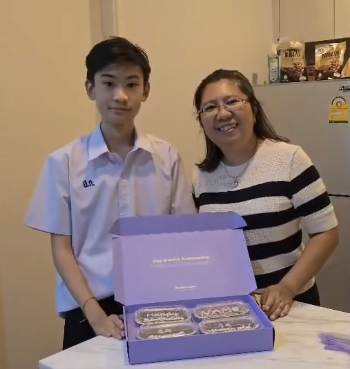
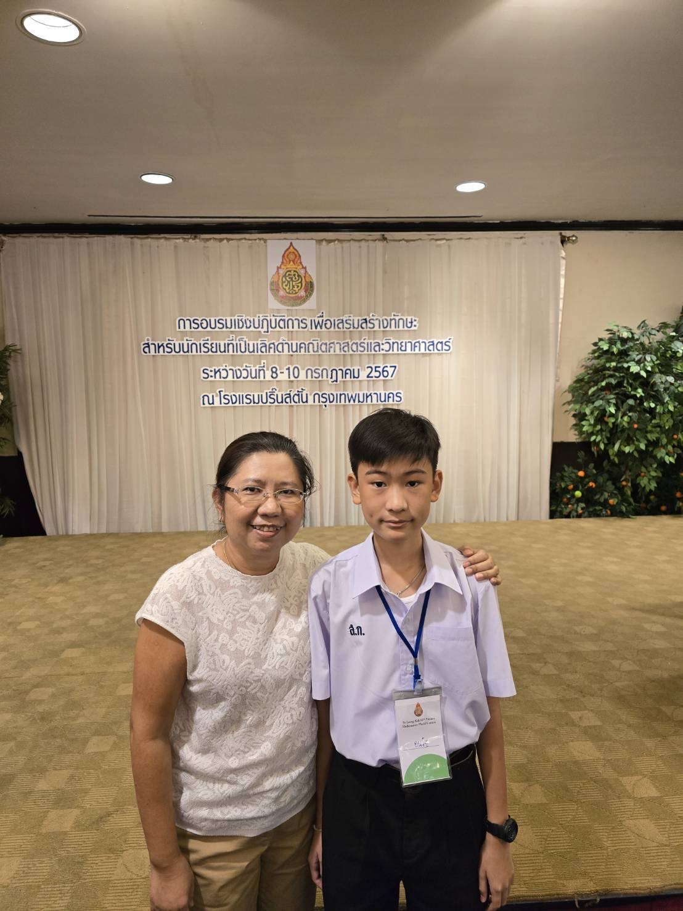
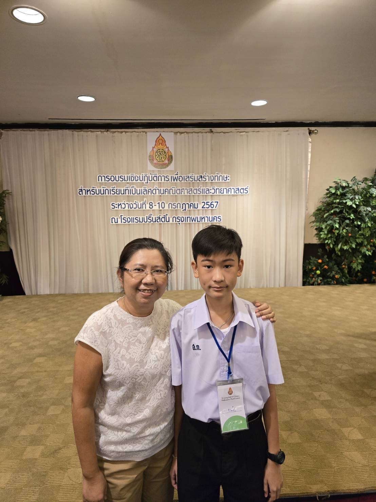

❤วันพ่อแห่งชาติ❤
5 ธันวาคม 2568
สิ่งที่อยากจะบอกพ่อ
พ่อเป็นบุคคลที่สำคัญที่สุดคนหนึ่งในชีวิตของผม ตั้งแต่วันที่ผมลืมตาดูโลก พ่อคือผู้ที่คอยปกป้อง ดูแล และเสียสละทุกอย่างเพื่อให้ผมเติบโตอย่างมีคุณภาพ แม้พ่อจะไม่ใช่คนที่พูดจาอ่อนหวานหรือแสดงความรักออกมามากนัก แต่ทุกการกระทำของพ่อ ล้วนแฝงไปด้วยความห่วงใยและความรักที่ยิ่งใหญ่ ตลอดระยะเวลาที่ผ่านมา พ่อทำงานหนักโดยไม่เคยบ่นถึงความเหน็ดเหนื่อย พ่อยอมตื่นเช้า กลับบ้านดึก และอดทนต่อความกดดันมากมาย เพียงเพื่อให้ครอบครัวมีชีวิตที่มั่นคง พ่อสอนผมด้วยการกระทำมากกว่าคำพูด สอนให้รู้จักความอดทน ความรับผิดชอบ และการเป็นคนดีในสังคม พ่อเป็นแบบอย่างของความเข้มแข็งที่ทำให้ผมเรียนรู้ว่าจะต้องยืนหยัดต่ออุปสรรคอย่างไร ในบางครั้ง ผมอาจทำให้พ่อเสียใจหรือผิดหวัง ด้วยความดื้อรั้นและความไม่เข้าใจในความหวังดีของพ่อ แต่พ่อก็ไม่เคยทอดทิ้งผม พ่อยังคงให้โอกาส ให้คำแนะนำ และยืนอยู่ข้างผมเสมอ ความรักของพ่อเป็นความรักที่ไม่ต้องการสิ่งตอบแทน เป็นความรักที่มั่นคงและไม่มีเงื่อนไข
ปัจจุบัน แม้ผมอาจยังไม่ประสบความสำเร็จอย่างที่พ่อคาดหวัง แต่ผมสัญญาว่าจะตั้งใจทำหน้าที่ของตนเองให้ดีที่สุด จะเป็นคนดี มีความรับผิดชอบ และใช้ชีวิตอย่างไม่ทำให้พ่อผิดหวัง เพราะทุกความพยายามของผม ล้วนมีพ่อเป็นแรงบันดาลใจสำคัญ สุดท้ายนี้ ผมอยากกล่าวคำขอบคุณจากหัวใจ ขอบคุณพ่อสำหรับความรัก ความเสียสละ และความอดทนที่มอบให้ผมเสมอ ผมภูมิใจอย่างยิ่งที่ได้เกิดมาเป็นลูกของพ่อ และจะจดจำพระคุณของพ่อไว้ในใจตลอดไป


 

บทกลอนมอบให้พ่อ
พ่อคือแสงแรงใจในชีวิตคือดวงจิตมั่นคงไม่หวั่นไหว
เหนื่อยเพื่อลูกยอมทุกข์ลำพังไป
ขอกราบใจพ่อไว้เหนือหัวใจ
บทเพลงมอบให้พ่อ